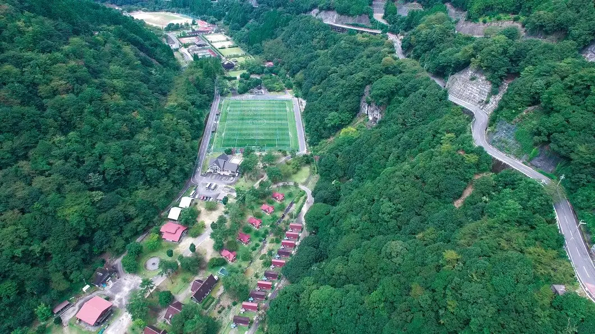
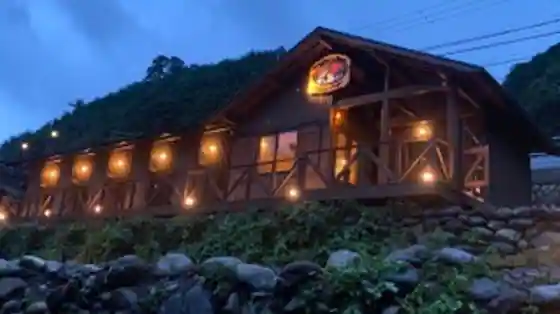
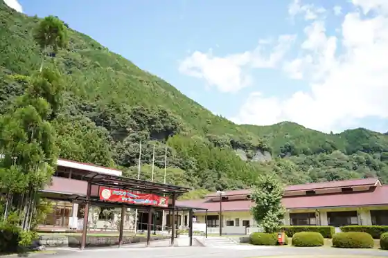
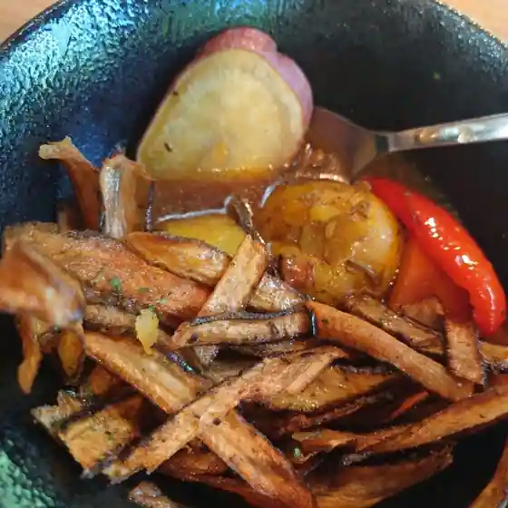
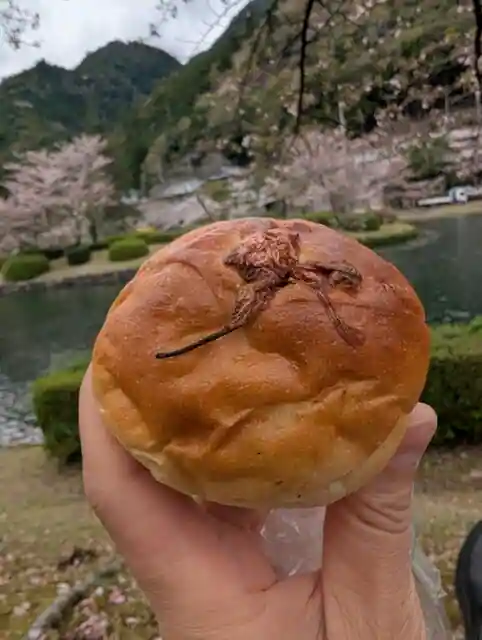
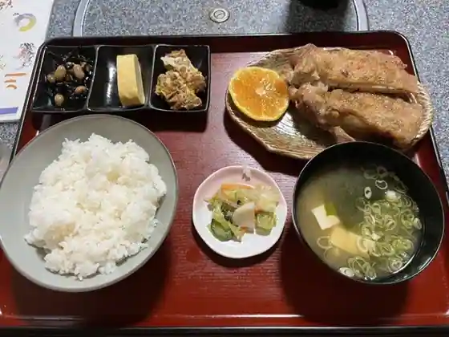
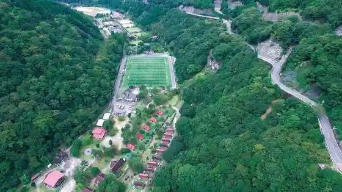
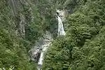

Shimokitayama, Nara: things to do, food and stays
Shimokitayama · Nara
Shimokitayama
Highlighted on the Nara map.

Stay
Ａｎｇｌｅｒ＇ｓ Ｂａｓｅ ＳＨＩＭＯＫＩＴＡＹＡＭＡ

Angler ' s Base SHIMOKITAYAMA
下北山スポーツ公園

Shimokitayama Supotsu Koen
Inn in Ueikehara, Shimokitayama with parking and groups.
Dining
Angler's Base SHIMOKITAYAMA

Angler's Base SHIMOKITAYAMA
きなり亭
Kinari Tei
たもとパン店

Tamoto Bakery
花川

Hanakawa
Sights
Shimokitayama Supotsu Park
Shimokitayama Supotsu Park Campground

Fudo Nanae Falls

Ikehara Dam